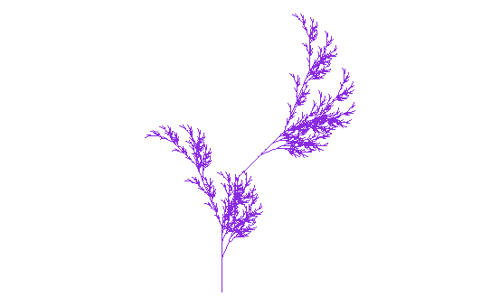
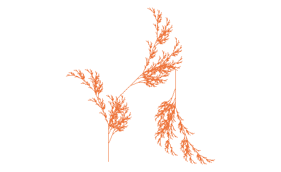
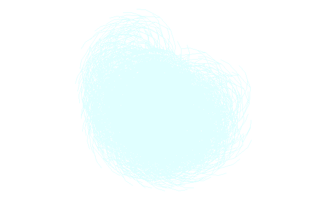

After running the code, it created this leaf:

I created a few more leaves by changing the code. For my next leaf, I changed the color to sienna2 and altered the code like this:
{angle=20} depth=6
The resulting leaf looked like this:

It’s interesting how the rest of the leaf was unchanged by it added this extra leaf on the side, I didn’t expect that!
I made one final leaf by changing the color to lightcyan and altering the code like this:
{axiom=“X”} rules=list(“X”=“F-[[X]+X]+F[+FX]-X”, “F”=“FF+1”) angle=23 depth=7
I changed the angle to 23, but also the depth to 7 and added +1 to “F” in the axiom variable. The result was shocking:

It’s amazing how a simple change can produce such large effects!